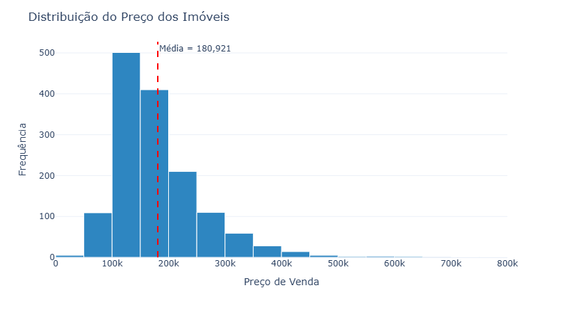
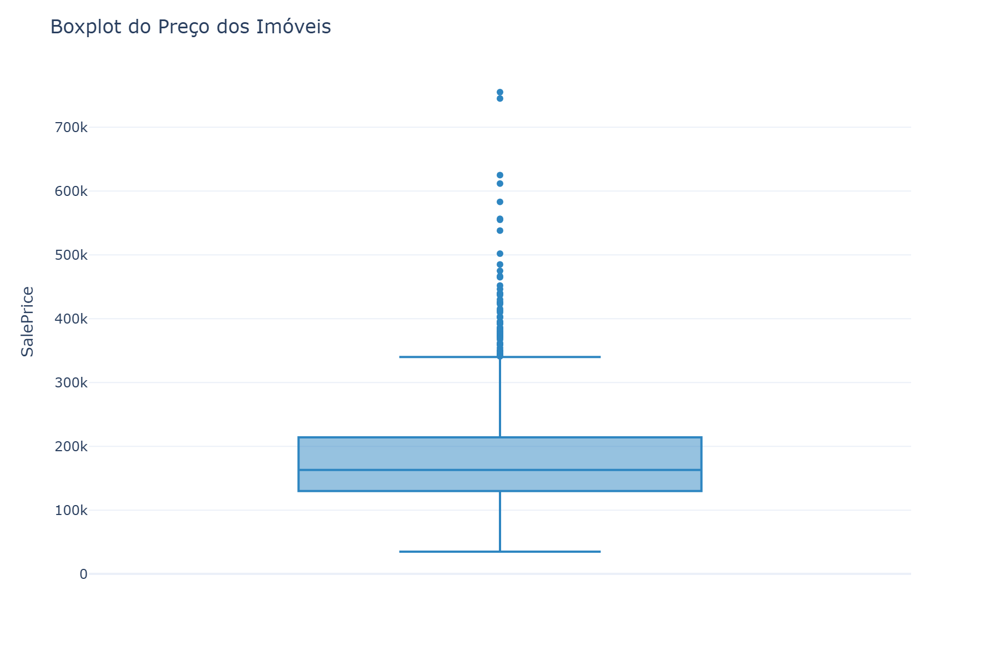
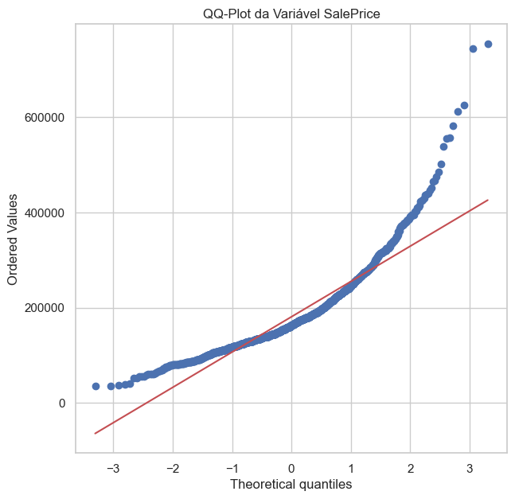
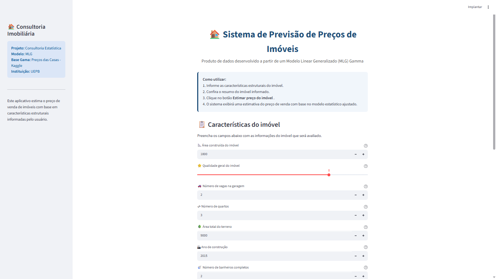

Como estimar o preço de venda de um imóvel de forma objetiva?
Uma imobiliária necessita de uma forma mais objetiva e padronizada para estimar o preço de venda dos imóveis, reduzindo a dependência de avaliações exclusivamente subjetivas.
O desafio é identificar quais características dos imóveis exercem maior influência sobre o preço e utilizar esse conhecimento para apoiar a tomada de decisão.
Problema central: Como estimar,de forma objetiva e confiável , o valor de mercado de imóvel a partir de suas características?
🎯 Objetivo Geral
Desenvolver um modelo estatístico capaz de estimar o preço de venda de imóveis residenciais a partir de suas características estruturais, apoiando a tomada de decisão no mercado imobiliário.
📌 Objetivos Específicos
📂
Base de Dados
➜
🧹
Tratamento dos Dados
➜
📊
Análise Exploratória
⬇
⚙️
Modelagem
(MLG)
➜
📈
Comparação
dos Modelos
➜
✅
Modelo
Final
➜
💻
Sistema
Streamlit
📂 House Prices
Fonte: Kaggle
📍 Local
Ames, Iowa (EUA)
💰 Variável resposta
SalePrice (USD)
🏠
1.460
Imóveis
📊
81
Variáveis
💰
SalePrice
Variável resposta
A base reúne características estruturais dos imóveis utilizadas para explicar e prever o preço de venda.
Histograma

Boxplot

QQ-Plot

📌 Evidências da Análise Exploratória
🎯 Decisão Estatística
Modelo escolhido: Modelo Linear Generalizado com distribuição Gamma, por apresentar melhor adequação às características observadas da variável SalePrice.
Comparação dos Modelos Ajustados
| Modelo | AIC | LogLik | Deviance |
|---|---|---|---|
| Gaussiano | 34968,19 | -17475,10 | 2,13 × 10¹² |
| Gamma | 34048,71 | -17015,35 | 40,41 |
🏆 Modelo Selecionado
GLM Gamma
✓ Menor AIC
✓ Maior Log-Likelihood
✓ Menor Deviance
🎯 Modelo Selecionado
O Modelo Linear Generalizado com distribuição Gamma apresentou o melhor desempenho estatístico entre os modelos avaliados.
📌 Justificativa
📌 Principais variáveis associadas ao preço dos imóveis
📐 Área construída
(GrLivArea)
⭐ Qualidade geral
(OverallQual)
🚗 Garagem
(GarageCars)
🌳 Área do terreno
(LotArea)
🏡 Ano de construção
(YearBuilt)
🛏 Quartos e banheiros
(BedroomAbvGr e FullBath)
📌 Principais Resultados
As variáveis selecionadas pelo modelo representam as principais características estruturais que influenciam o preço de venda dos imóveis.
De forma geral, imóveis maiores, com melhor qualidade construtiva, maior capacidade de garagem, terrenos mais amplos e construções mais recentes tendem a apresentar preços de venda mais elevados.
💻 Produto de Dados
Foi desenvolvido um sistema em Streamlit para estimar automaticamente o preço de venda de imóveis a partir das características informadas pelo usuário.

🏠📊
Muito obrigado!
Projeto de Consultoria Estatística
❓ Perguntas?
Eduarda da Silva Brito • Maria Helena • Ana Maria
Universidade Estadual da Paraíba – UEPB